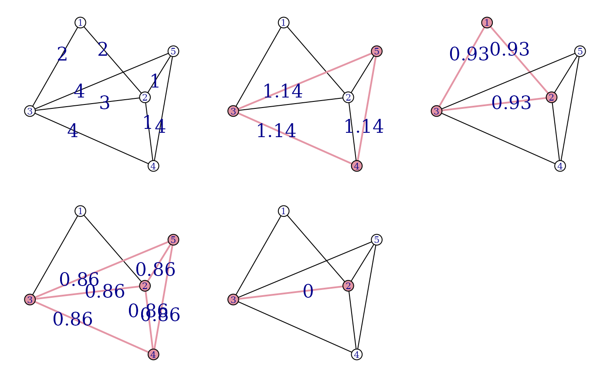

Graphlet decomposition models a weighted undirected graph via the union of potentially overlapping dense social groups. This is done by a two-step algorithm. In the first step a candidate set of groups (a candidate basis) is created by finding cliques if the thresholded input graph. In the second step these the graph is projected on the candidate basis, resulting a weight coefficient for each clique in the candidate basis.
Arguments
- graph
The input graph, edge directions are ignored. Only simple graph (i.e. graphs without self-loops and multiple edges) are supported.
- weights
Edge weights. If the graph has a
weightedge attribute and this argument isNULL(the default), then theweightedge attribute is used.- cliques
A list of vertex ids, the graphlet basis to use for the projection.
- niter
Integer scalar, the number of iterations to perform.
- Mu
Starting weights for the projection.
Value
graphlets() returns a list with two members:
- cliques
A list of subgraphs, the candidate graphlet basis. Each subgraph is give by a vector of vertex ids.
- Mu
The weights of the subgraphs in graphlet basis.
graphlet_basis() returns a list of two elements:
- cliques
A list of subgraphs, the candidate graphlet basis. Each subgraph is give by a vector of vertex ids.
- thresholds
The weight thresholds used for finding the subgraphs.
graphlet_proj() return a numeric vector, the weights of the graphlet
basis subgraphs.
Details
igraph contains three functions for performing the graph decomponsition of a
graph. The first is graphlets(), which performed both steps on the
method and returns a list of subgraphs, with their corresponding weights.
The second and third functions correspond to the first and second steps of
the algorithm, and they are useful if the user wishes to perform them
individually: graphlet_basis() and graphlet_proj().
Examples
## Create an example graph first
D1 <- matrix(0, 5, 5)
D2 <- matrix(0, 5, 5)
D3 <- matrix(0, 5, 5)
D1[1:3, 1:3] <- 2
D2[3:5, 3:5] <- 3
D3[2:5, 2:5] <- 1
g <- simplify(graph_from_adjacency_matrix(D1 + D2 + D3,
mode = "undirected", weighted = TRUE
))
V(g)$color <- "white"
E(g)$label <- E(g)$weight
E(g)$label.cex <- 2
E(g)$color <- "black"
layout(matrix(1:6, nrow = 2, byrow = TRUE))
co <- layout_with_kk(g)
par(mar = c(1, 1, 1, 1))
plot(g, layout = co)
## Calculate graphlets
gl <- graphlets(g, niter = 1000)
## Plot graphlets
for (i in 1:length(gl$cliques)) {
sel <- gl$cliques[[i]]
V(g)$color <- "white"
V(g)[sel]$color <- "#E495A5"
E(g)$width <- 1
E(g)[V(g)[sel] %--% V(g)[sel]]$width <- 2
E(g)$label <- ""
E(g)[width == 2]$label <- round(gl$Mu[i], 2)
E(g)$color <- "black"
E(g)[width == 2]$color <- "#E495A5"
plot(g, layout = co)
}
